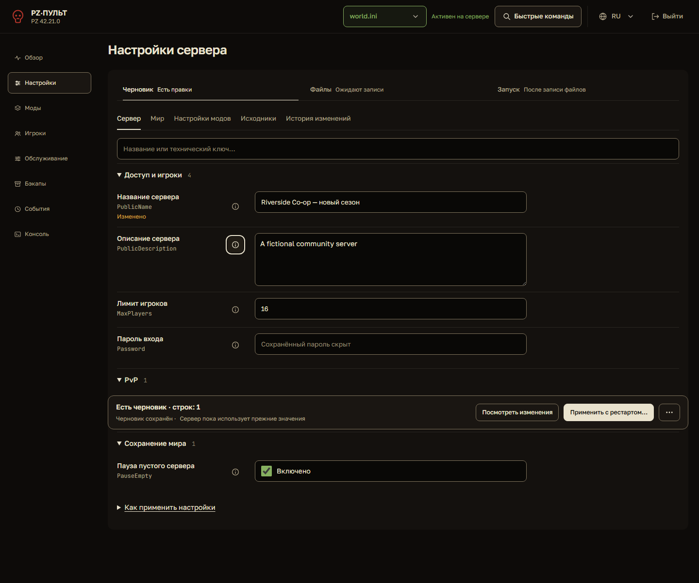
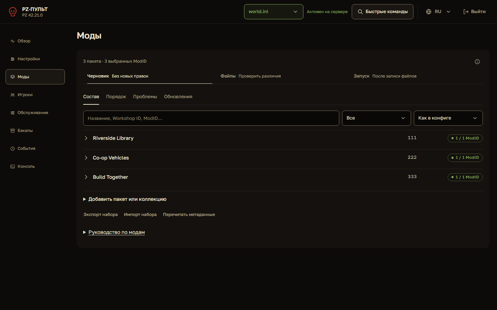
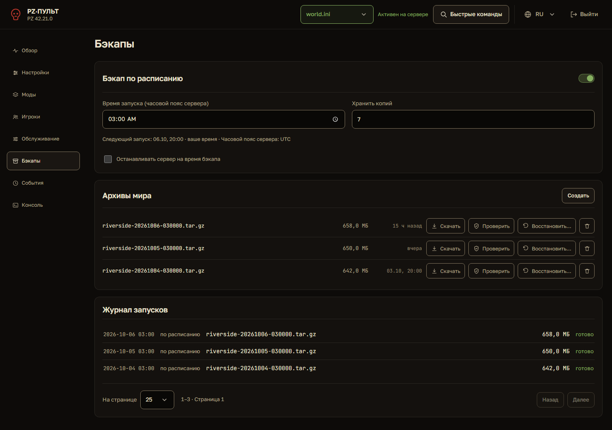

Улучшения внедрены в приложение
Сохранена текущая тёплая тёмная палитра. Изменения работают с существующими профилями, черновиками и операциями.
Что изменилось
- Видимый статус выбранного профиля на десктопе и телефоне.
- Заголовок страницы перед стадиями применения, ограниченная ширина подписей и полей, технические ключи и отметки изменённых значений.
- Общие строки выбора для булевых параметров. Панель черновика над мобильной навигацией; на низких экранах она остаётся в потоке.
- Сохранение в черновике явно отделено от изменений работающего сервера. Конфликт блокирует применение и направляет к сравнению и объединению.
- Поиск модов на первом плане, отдельное раскрываемое добавление пакета или коллекции. Импорт, экспорт, метаданные, порядок и карты доступны.
- Подписанные действия с архивами, результат проверки рядом с соответствующим файлом, следующий запуск в вашем времени и часовой пояс сервера.
- Даты демоархивов, журнала и событий теперь описывают общий сценарий. Версия в демологах относится к B42.
Графики, остальные разделы, история черновиков, маскирование секретов, подтверждения остановки, рестарта и замены мира сохранены.
Настройки и черновик
Это снимки рабочего интерфейса на вымышленных локальных данных Riverside Co-op. Они получены из кода приложения, а не из отдельного макета.



Моды

Бэкапы

Проверки
Восемь разделов × два языка × ширины 320, 390, 768, 1440 px: 64 сочетания, переполнений 0, нарушений в автоматическом проходе axe 0. Мобильная панель черновика: около 136 px при экране 390 × 844, над нижней навигацией.
Общий набор: 871 тест прошёл сразу, 3 пропущены. Восемь падений в проверках прежней компоновки и выравнивания архивов устранены: повторный запуск — 8 успешно, 0 ошибок. Отдельно прошли проверки черновиков и секретов, четырёх ширин архивов, демодат и актуальных снимков. Проверки зависимостей, стиля кода, переводов и синтаксиса JavaScript успешны.
Результаты проверок кода и поведения
Проверки используют Chromium и изолированные данные. Настоящий игровой сервер, Steam и производственные архивы не используются. Автоматический проход доступности не заменяет проверку экранным диктором и физическим телефоном.